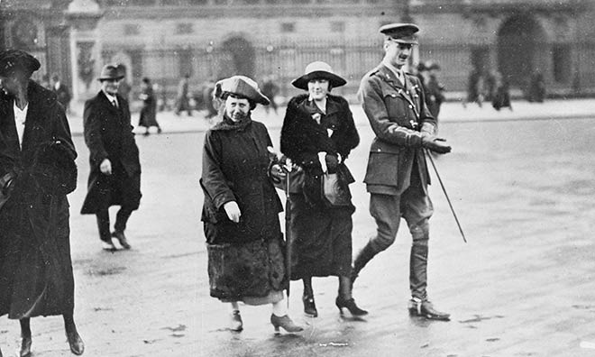
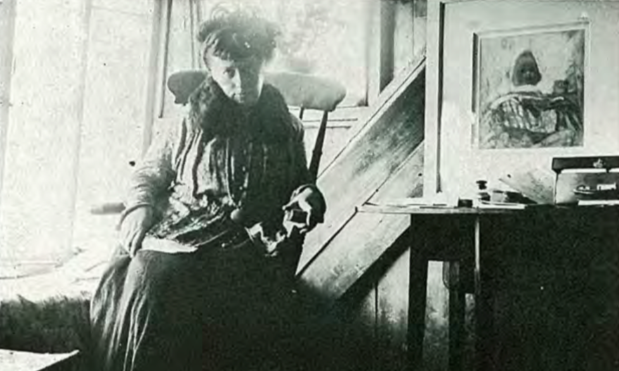
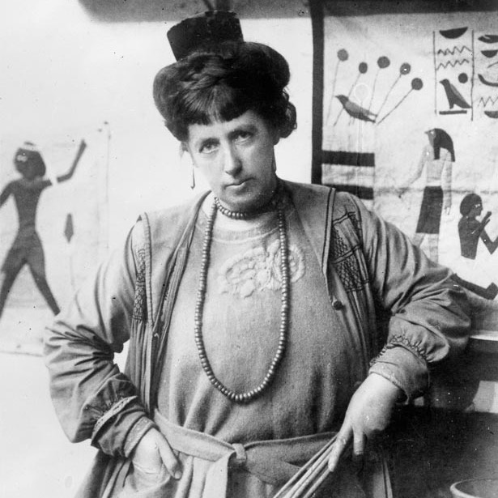
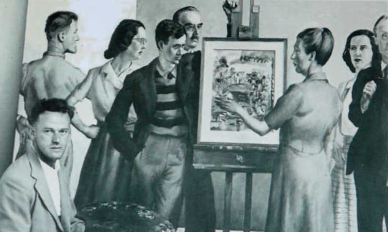
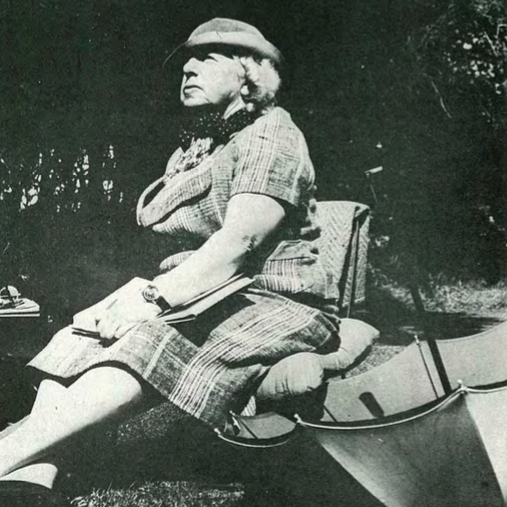
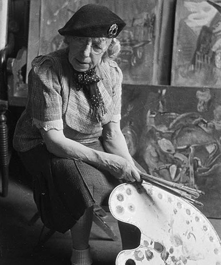
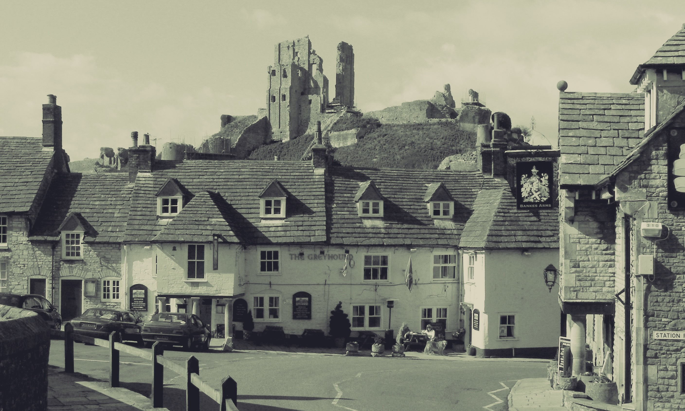
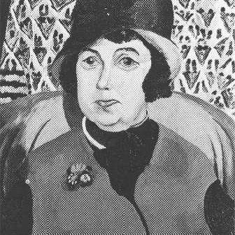

"My aspect of the family talent, or curse? has taken the form of a deep intellectual experience a force which has given me no rest or peace but infinite joy & sometimes even rapture."
In August 1940, a letter to her brother.
Frances Hodgkins was the outstanding artist of her generation, with a professional life that spanned 56 years and earned her a secure place among the English avant-garde of the 1930s and 1940s: the first New Zealand-born artist to achieve such stature. Her role in the transmission of ideas from Paris to London has yet to be fully documented. She was also one of the women artists who, by their example of single minded dedication to career, challenged the category 'lady artist' with all its connotations of curtailed achievement.
Throughout a long life divided between two hemispheres, she wrote hundreds of letters to her family. In one of these, she discussed her situation as an expatriate and her struggle not only as an artist but as a woman artist:
"It is one of the tragedies of leaving Home - New Zealand is too far away - it ceases to be real. New Zealanders like myself cannot help becoming denationalized, they have no country, it is sad, but true... Art is like that, it absorbs your whole life and being. Few women can do it successfully. It requires enormous vitality. That is my conception of genius-vitality."
In 1924, a letter to her mother.
1869 - 1889
Dunedin
"I was born in Dunedin; we were an English family in a Scottish settlement."
Frances Hodgkins, 1912.
Frances Hodgkins grew up in the southernmost of New Zealand's main centres, the third child of an English-born solicitor and his Australian wife. She attended private schools and, following the example of her father and sister, sketched from childhood onwards. About 1885, after several earlier moves, the family shifted to Ravensbourne, a quiet suburb on the shores of Otago Harbour. Here, with her elder sister Isabel and her four brothers, Frances passed her adolescent years.
1889 - 1901
Dunedin
"I am slowly settling down to an old midship, and I have only one prominent idea and that is that nothing will interfere between me and my work."
Frances Hodgkins, 1895
In 1889, financial losses forced the Hodgkins family to leave Ravensbourne and rent Cranmore Lodge on the hills above the city. A year later Frances began to exhibit, but her career as a serious artist dates from 1893 when she took lessons from the Italian painter G. P. Nerli. In 1895 she attended the Dunedin School of Art and a year later began teaching. After W. M. Hodgkins died in 1898 the family broke up and Frances decided to travel overseas. She set out for Europe in February 1901.
1901 - 1906
Europe & New Zealand
"Come to Tetuan. Come-catch the next steamer, cancel all engagements, chuck the studio, let everything go to the winds, only come without a moment's delay and value for yourself all the dreams of beauty colour and sunshine..."
Frances Hodgkins to Dorothy Kate Richmond, 1903
Frances intended to be abroad twelve months or so; in fact she stayed away nearly three years. Falling under the spell of the old world, she travelled widely with Miss D. K. Richmond and other friends. She painted industriously and succeeded in having work shown in the Royal Academy and in three London galleries. On her return to New Zealand she took a studio in Wellington. But, unhappy in her personal life and disillusioned with the colony, she sailed once more for Europe in 1906.
1906 - 1913
Europe, Australia & New Zealand
"My dearest Mother:
To put Venice into words is impossible likewise it is impossible to put it into paint. Also it is an impertinence. There is a fairy enchantment about it, a sort of wizardry that can't be expressed. It is better to be silent about it all than to use the wrong word or the wrong colour."
Frances Hodgkins, 1906
The second European visit was again planned for a year but lengthened into seven. After extensive travels and her first one man show in London, Frances established herself in Paris. There she built up a modest reputation as watercolourist and teacher. When she embarked for New Zealand in October 1912 it was not to settle but to see her family and show her work. In October 1913, following highly successful exhibitions in Australia and New Zealand, she left to continue her career in Europe.
1913 - 1927
England & Europe
"My Dearest Mother,
This is a record of events in Concarneau since the Declaration of War on Sat. 1st Aug. Saturday was a day of suspense and agitation. Nobody could work. We hung round the Mairie and Port Office waiting for news. Being Saturday the Port was full of fishermen, ail very drunk. About 5 the town crier announced the fateful news we were all waiting for-Declaration of War by Germany and General Mobilisation of the French Army."
Frances Hodgkins, 1914


The decade after her southern tour was one of repeated disappointment and failure. On the outbreak of war she left France to paint and teach in St Ives, Cornwall, her home until 1920. Efforts to establish herself in London were unsuccessful and at the end of two disastrous continental ventures she retreated to England, first to Burford and then to Manchester. There she found work as a fabric designer but soon returned to painting. In the summer of 1927 she left the city and gave up teaching, determined to make a further bid for recognition in London.

1927 - 1939
England & Europe
"I have travelled far from the Academic tradition which fetters England and recognizes no possibility of further revelation . .. I believe if you saw my present work you would find it very simple to understand-it has grown more and more simple and sincere."
Frances Hodgkins to her eldest brother, 1928

From the late twenties onwards Frances Hodgkins gradually became known among modern English painters. Helped at first by friends and fellow artists, she exhibited in London galleries and in 1929 was elected to the advanced Seven and Five Society. Already she had met the art dealer Arthur R. Howell, an association which led in 1932 to a contract with the Lefevre Galleries. Though she sometimes rented a London studio, she preferred to work in rural England and often spent the winter in such Mediterranean resorts as Ibiza in the Balearics.

1939 - 1947
England
"My Dearest Willie,
I must write you a quick line. All is confusion, we have been very near war for six vital days and now it is war. Germany is bombing Poland. I am filled with hatred of Germany and filled with hatred of Russia, but even now, at this flash point I shall hope for a solution and still dare hope for the miracle to happen.
Don't worry about me."
Frances Hodgkins to her eldest brother, 1939



In the thirties she was known only to a limited public but received both critical and popular acclaim during the war years. In December 1939 she was invited to exhibit at the Venice Biennale and her career reached its climax at a retrospective exhibition held in November 1946. Unfortunately her long-deferred triumph was overshadowed by ill health but she continued to paint until the last months of her life. She died at Dorchester, Dorset, near her last home, Corfe Castle.
